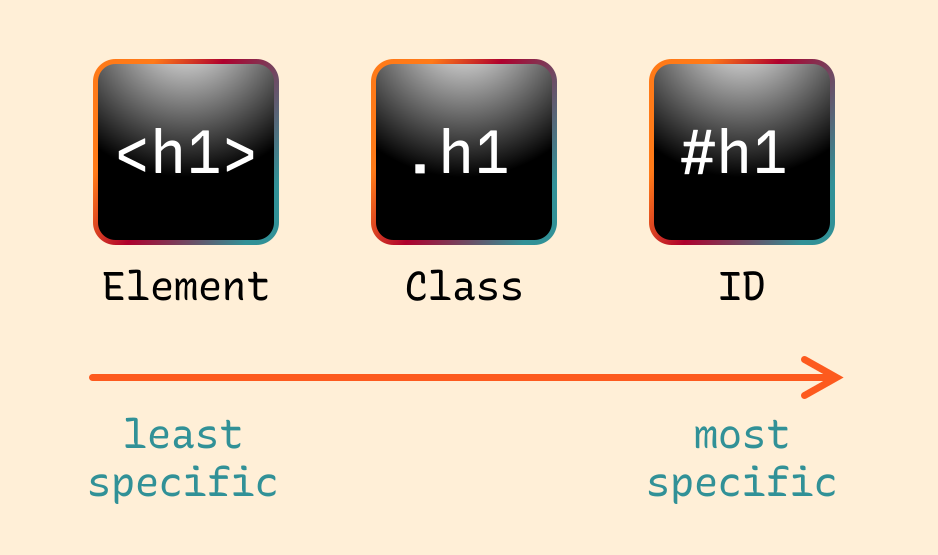
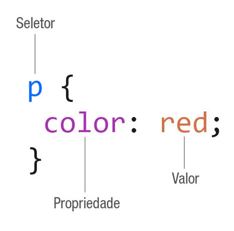
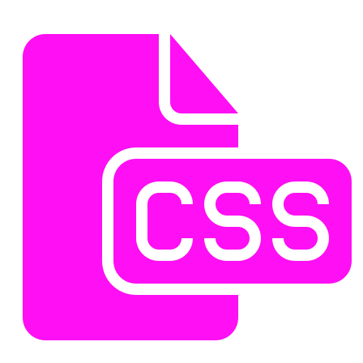

CSS na Prática
Entendendo Seletores, Propriedades e Valores
O que é CSS?
CSS (Cascading Style Sheets) é uma linguagem utilizada para definir a aparência de páginas feitas em HTML. Enquanto o HTML organiza o conteúdo, o CSS é responsável por deixar o site visualmente mais bonito e organizado, controlando cores, fontes, tamanhos, espaçamentos e posicionamento dos elementos.
Com o uso do CSS, é possível separar o conteúdo da apresentação, o que facilita a manutenção do site e permite reaproveitar estilos em várias páginas diferentes. Isso torna o desenvolvimento mais eficiente e profissional.
Seletores

Os seletores são a parte do CSS responsável por indicar quais elementos do HTML receberão determinado estilo. Eles funcionam como uma forma de “apontar” para os elementos que queremos modificar dentro da página.
Existem diferentes tipos de seletores, como o seletor de elemento, que estiliza todas as tags iguais (por exemplo, todos os parágrafos), o seletor de classe, que permite aplicar estilos a vários elementos específicos, e o seletor de id, que é usado para estilizar apenas um elemento único na página.
- p → seleciona todos os parágrafos
- .classe → seleciona elementos com classe
- #id → seleciona um elemento específico
Propriedades e Valores

No CSS, cada regra é formada por propriedades e valores. A propriedade define qual aspecto do elemento será alterado, como a cor do texto, o tamanho da fonte ou o espaçamento. Já o valor define como essa alteração será aplicada.
Por exemplo, ao utilizar "color: blue;", estamos dizendo que a propriedade é a cor do texto e o valor é azul. Essa estrutura é fundamental para o funcionamento do CSS e está presente em todas as regras de estilização.
Exemplo: color: blue;
Exemplo de Código
p {
color: blue;
font-size: 18px;
}
Nesse exemplo, todos os parágrafos da página terão a cor azul e um tamanho de fonte de 18 pixels. Isso mostra como o CSS consegue alterar vários elementos ao mesmo tempo de forma simples e eficiente.
Sobre CSS

O CSS é essencial para deixar sites mais bonitos.
Dica Importante
O uso do CSS ajuda a manter o código organizado e facilita futuras alterações. Em vez de mudar cada elemento individualmente, é possível modificar apenas uma regra e aplicar a mudança em todo o site.
Referências
-
W3Schools. "CSS Tutorial".
Disponível em:
https://www.w3schools.com/css/
Utilizado como apoio para exemplos práticos e explicações simples. -
Vídeo de Youtube "Como usar a regra 60 30 10 em interfaces digitais".
Disponível em:
https://www.youtube.com/watch?v=pZK0ZZLkt2E
Utilizado como apoio para entender a regra 60–30–10 que foi aplicada no site para distribuir melhor as cores, utilizando, por exemplo, uma cor clara como base, tons de azul para a estrutura e uma cor de destaque em laranja para chamar a atenção. Isso torna o site mais organizado, agradável visualmente e mais fácil de navegar.
-
Vídeo de Youtube: "O QUE É CSS? (Seletores, Propriedades e Valores)".
Disponível em:
https://www.youtube.com/watch?v=LWU2OR19ZG4
Fonte principal para a explicação do conteúdo apresentado no site.
As informações foram estudadas e reescritas com linguagem própria para melhor compreensão do conteúdo.
Por: Sebastian A. S. Diaz e Matheus F. Mation